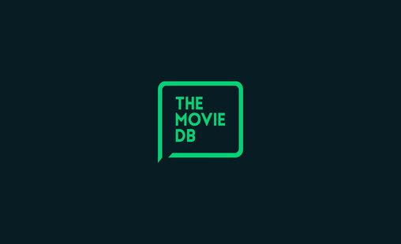
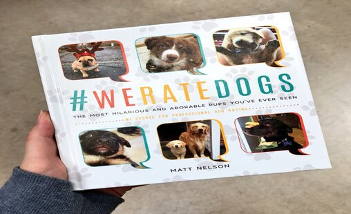

This report provides valuable insights and recommendations based on the
analysis of transactional data collected by Plato over the past year.
As a Business Intelligence Consultant, the goal is to help Plato's Pizza
make data-driven decisions for improving operations and driving more sales.

In this Data Exploration, a loan dataset from Prosper website, a peer-to-peer
P2P lending marketplace was examined. Employing Python and libraries like
Numpy, Pandas, Matplotlib, and Seaborn, I conducted thorough data wrangling,
addressing null values, refining data types, and subselecting pertinent
variables.

This comprehensive project delves into the analysis of a dataset containing information on 10,000
movies gathered from The Movie Database (TMDb). The primary focus revolves around key metrics such as user ratings,
revenue, and genres. The dataset, conveniently sourced from Kaggle provides a rich repository of
information for conducting a detailed exploration of trends and patterns
within the movie industry.
Leveraging Kaggle sourced Bike Sales dataset, offering a concise overview of
Bike sales trends. This visualization highlights key insights, including the
influence of factors such as gender, income, commute distance, and marital
status on bike purchases. Discover actionable recommendations for targeted
marketing campaigns, guiding bike sellers to effectively reach specific
demographics and optimize sales strategies.
In this SQL-based Covid-19 dataset exploration project, I delve into
the data using SQL Server to gain valuable insights. Leveraging SQL
querying and analysis techniques, I extract relevant information,
perform aggregations, and uncover patterns and trends in the Covid-19
data.
In this SQL-based housing dataset cleaning project, I leverage the power of SQL Server to ensure data
accuracy and quality. By employing advanced SQL techniques, I handle missing values, remove duplicates,
standardize formats, and address data inconsistencies. The result is a clean and refined housing dataset
ready for analysis and insights.

This project involved acquiring data from three sources, including Twitter
Archive and Image Predictions, obtained programmatically and manually. Due
to missing values, additional information was gathered from Twitter using
the TWEEPY API.
This dashboard provides insights into the responses collected from a survey conducted by Alex Freeberg among
individuals working in the field of data. All survey participants have roles within the data profession.